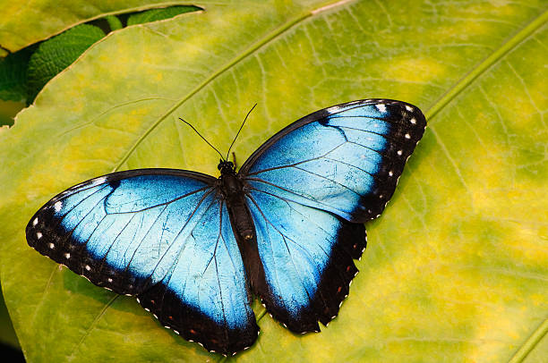

kupu-kupu ekspresif (morpho didius)
Dengan warna biru metalik yang mencolok

Kupu-kupu jenis Morpho Didius merupakan contoh keindahan alam yang menawan. Warna birunya berasal dari refleksi cahaya pada struktur mikroskopis pada sayap, menghasilkan penampilan yang ekspresif hingga mencolok.